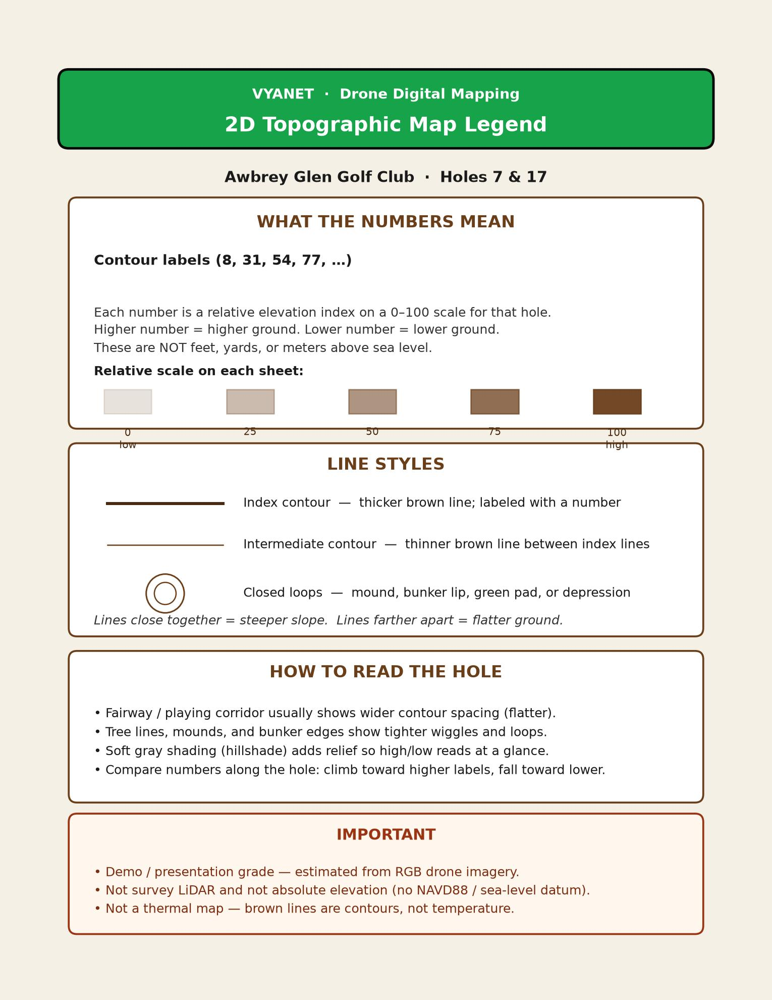

2D TOPO LEGEND
What the contour numbers mean
What the contour numbers mean
Use this sheet with the Hole 7 and Hole 17 topographic maps. Numbers on the brown lines are a relative elevation index (0–100) for that hole — not feet or meters above sea level.
